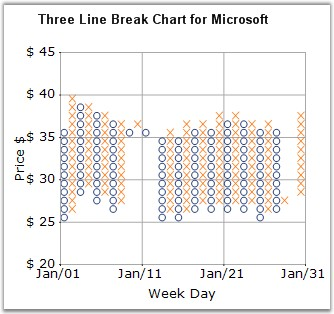

Point and Figure Chart is used to identify support levels, resistance levels and chart patterns. The chart ignores the time factor and concentrates solely on movements in price - a column of Xs or Os may take one day or several weeks to complete. By convention, the first X in a column is plotted one box above the last O in the previous column (and the first O in a column is plotted one box below the highest X).
This is a chart that plots the day-to-day increment and decrement in price. It uses a series of Xs and Os to determine price trends where the Xs represent an upward trend and the Os represent a downward trend. The default value of ReversalAmount is 1. Use the PriceUpColor to specify the color for the Xs and PriceDownColor to specify the color for the Os.
This chart requires two y values, the high value and the low value for the specified period.

Figure 77: Chart displaying Point And Figure Series
Chart Details
|
Details | |
|
Number of Y values per point |
2 |
|
Number of Series |
One |
|
Cannot be Combined with |
Pie, Bar |
Point and Figure series can be added to the chart using the following code.
|
[C#]
// Create chart series and add data points into it. ChartSeries series = this.chartControl1.Model.NewSeries ("Series Name",ChartSeriesType.PointAndFigure); // Arguments: X value, low value, high value series.Points.Add (0, 1, 5); series.Points.Add (1, 3, 7); series.Points.Add (2, 4, 8); series.ReversalAmount = 1.0;
// Add the series to the chart series collection. this.chartControl1.Series.Add (series); |
|
[VB.NET]
' Create chart series and add data points into it. Dim series As ChartSeries = Me.chartControl1.Model.NewSeries ("Series Name",ChartSeriesType.PointAndFigure) ' Arguments: X value, low value, high value series.Points.Add (0, 1, 5) series.Points.Add (1, 3, 7) series.Points.Add (2, 4, 8) series.ReversalAmount = 1.0
' Add the series to the chart series collection. Me.chartControl1.Series.Add (series) |
|
Customization Options |
|
DisplayShadow, DisplayText, DrawSeriesNameInDepth, HeightBox, PriceDownColor, PriceUpColor, ReversalAmount, Spacing Between Series ShadowInterior, ShadowOffset, FancyToolTip, Font, Interior, LegendItem, Name, PointsToolTipFormat, SmartLabels, Summary, Text, TextColor, TextFormat, TextOffset, TextOrientation, Visible |